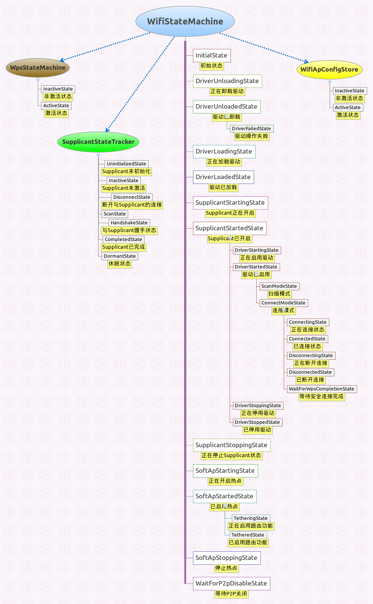

WIFI状态机
相关文件
framework/base/wifi/java/com/android/net/wifi/WifiStateMachine.java
framework/base/wifi/java/com/android/net/wifi/WifiMonitor.java
framework/base/wifi/java/com/android/net/wifi/WifiApConfigStore.java
framework/base/wifi/java/com/android/net/wifi/SupplicantStateTracker.java
framework/base/wifi/java/com/android/net/wifi/WpsStateMachine.java
frameworks/base/core/java/android/net/DhcpInfoInternal.java
frameworks/base/core/java/com/android/internal/util/StateMachine.java
frameworks/base/core/java/com/android/internal/util/LruCache.java
概述
Wifi状态机是4.0新增的机制，之前版本的Wifi状态在WifiStateTracker中处理。
Wifi状态机的实现类为WifiStateMachine，它继承于StateMachine。该类实现了比较
复杂的功能，主要包括记录网络连接属性和状态、监听wpa_supplicant的消息、处理DHCP信息、
管理WPS连接、接收并处理扫描网络的广播消息、记录扫描到的热点信息等等。
WifiStateMachine初始化
-
该类继承自StateMachine，关于状态机的实现可参照状态机机制
-
状态机接收来自wpa_supplicant的消息，该功能由WifiMonitor实现。
-
通过WpsStateMachine管理WPS连接。
-
通过WifiApConfigStore管理AP。
-
通过TetheringState处理路由功能。
-
扫描热点。
public WifiStateMachine(Context context, String wlanInterface) {
super(TAG);
mContext = context;
mInterfaceName = wlanInterface;
mNetworkInfo = new NetworkInfo(ConnectivityManager.TYPE_WIFI, 0, NETWORKTYPE, "");
mBatteryStats = IBatteryStats.Stub.asInterface(ServiceManager.getService("batteryinfo"));
IBinder b = ServiceManager.getService(Context.NETWORKMANAGEMENT_SERVICE);
mNwService = INetworkManagementService.Stub.asInterface(b);
mWifiMonitor = new WifiMonitor(this);
mDhcpInfoInternal = new DhcpInfoInternal();
mWifiInfo = new WifiInfo();
mSupplicantStateTracker = new SupplicantStateTracker(context, this, getHandler());
mWpsStateMachine = new WpsStateMachine(context, this, getHandler());
mLinkProperties = new LinkProperties();
// 初始化WifiApConfigStore对象
WifiApConfigStore wifiApConfigStore = WifiApConfigStore.makeWifiApConfigStore(
context, getHandler());
wifiApConfigStore.loadApConfiguration();
mWifiApConfigChannel.connectSync(mContext, getHandler(), wifiApConfigStore.getMessenger());
// ......
mAlarmManager = (AlarmManager)mContext.getSystemService(Context.ALARM_SERVICE);
Intent scanIntent = new Intent(ACTION_START_SCAN, null);
mScanIntent = PendingIntent.getBroadcast(mContext, SCAN_REQUEST, scanIntent, 0);
mDefaultFrameworkScanIntervalMs = mContext.getResources().getInteger(
com.android.internal.R.integer.config_wifi_framework_scan_interval);
mDefaultSupplicantScanIntervalMs = mContext.getResources().getInteger(
com.android.internal.R.integer.config_wifi_supplicant_scan_interval);
// 注册BroadcastReceiver
// ......
mScanResultCache = new LruCache<String, ScanResult>(SCAN_RESULT_CACHE_SIZE);
PowerManager powerManager = (PowerManager)mContext.getSystemService(Context.POWER_SERVICE);
mWakeLock = powerManager.newWakeLock(PowerManager.PARTIAL_WAKE_LOCK, TAG);
// 添加状态对象
// ......
setInitialState(mInitialState);
start();
}
状态机的命令集
-
状态机对象向外界提供了功能接口，而这些接口在状态机机制的内部则是对应一个整形的命令。
-
状态机通常会运行在一个闭合的循环里面处理这些命令，从而在不同状态下实现不同的功能。
-
可通过查找这些命令关键字来查看各种功能的实现。
关于驱动的命令
| 命令表示 |
描述 |
备注 |
| CMD_LOAD_DRIVER |
加载驱动 |
|
| CMD_UNLOAD_DRIVER |
卸载驱动 |
|
| CMD_LOAD_DRIVER_SUCCESS |
加载驱动成功 |
|
| CMD_LOAD_DRIVER_FAILURE |
加载驱动失败 |
|
| CMD_UNLOAD_DRIVER_SUCCESS |
卸载驱动成功 |
|
| CMD_UNLOAD_DRIVER_FAILURE |
卸载驱动失败 |
|
启停wpa_supplicant的命令
| 命令表示 |
描述 |
备注 |
| CMD_START_SUPPLICANT |
开启wpa_supplicant服务 |
|
| CMD_STOP_SUPPLICANT |
停止wpa_supplicant服务 |
|
| CMD_START_DRIVER |
启用驱动程序 |
|
| CMD_STOP_DRIVER |
禁用驱动程序 |
|
| CMD_STATIC_IP_SUCCESS |
设置静态IP成功 |
|
| CMD_STATIC_IP_FAILURE |
设置静态IP失败 |
|
| CMD_STOP_SUPPLICANT_FAILED |
停止wpa_supplicant服务失败 |
|
| CMD_DELAYED_STOP_DRIVER |
延迟停止驱动程序 |
|
wpa_supplicant功能命令
| 命令表示 |
描述 |
备注 |
| CMD_PING_SUPPLICANT |
探测wpa_supplicant服务是否存在 |
|
| CMD_ADD_OR_UPDATE_NETWORK |
添加获取更新网络节点 |
|
| CMD_REMOVE_NETWORK |
移除网络节点 |
|
| CMD_ENABLE_NETWORK |
启用网络节点 |
|
| CMD_ENABLE_ALL_NETWORKS |
启用所有网络节点 |
|
| CMD_DISABLE_NETWORK |
禁用所有网络节点 |
|
| CMD_BLACKLIST_NETWORK |
设置网络节点黑名单 |
|
| CMD_CLEAR_BLACKLIST |
清除网络节点黑名单 |
|
| CMD_SAVE_CONFIG |
保存网络设置 |
|
| CMD_START_SCAN |
开始扫描 |
|
| CMD_SET_SCAN_MODE |
设置扫描模式 |
|
| CMD_SET_SCAN_TYPE |
设置扫描类型 |
|
| CMD_DISCONNECT |
断开网络连接 |
|
| CMD_RECONNECT |
重新连接网络 |
|
| CMD_REASSOCIATE |
重新关联到一个网络节点 |
|
关于热点的命令
| 命令表示 |
描述 |
备注 |
| CMD_START_AP |
开启热点 |
|
| CMD_START_AP_SUCCESS |
开启热点成功 |
|
| CMD_START_AP_FAILURE |
开启热点失败 |
|
| CMD_STOP_AP |
停止热点 |
|
| CMD_SET_AP_CONFIG |
配置热点 |
|
| CMD_SET_AP_CONFIG_COMPLETED |
配置热点完成 |
|
| CMD_REQUEST_AP_CONFIG |
请求热点配置 |
|
| CMD_RESPONSE_AP_CONFIG |
应答热点配置 |
|
| CMD_TETHER_STATE_CHANGE |
路由状态改变 |
|
| CMD_TETHER_NOTIFICATION_TIMED_OUT |
路由通知超时 |
|
| CMD_BLUETOOTH_ADAPTER_STATE_CHANGE |
蓝牙适配器状态改变 |
|
关于性能的命令
| 命令表示 |
描述 |
备注 |
| CMD_SET_HIGH_PERF_MODE |
设置高性能模式，禁用休眠优化方案。休眠优化方案包括：包过滤、关闭漫游、DTIM唤醒设定 |
|
| CMD_SET_COUNTRY_CODE |
设置国家代码 |
|
| CMD_ENABLE_RSSI_POLL |
启用RSSI(Received Signal Strength Indication)接收强度指标 |
|
| CMD_RSSI_POLL |
|
|
| CMD_START_PACKET_FILTERING |
开启包过滤功能 |
|
| CMD_STOP_PACKET_FILTERING |
停止包过滤功能 |
|
关于P2P的命令
| 命令表示 |
描述 |
备注 |
| WIFI_ENABLE_PENDING |
|
|
| P2P_ENABLE_PROCEED |
启用P2P |
|
其他命令
| 命令表示 |
描述 |
备注 |
| CMD_CONNECT_NETWORK |
连接到一个网络节点 |
|
| CMD_SAVE_NETWORK |
保存一个网络节点 |
|
| CMD_FORGET_NETWORK |
丢弃一个网络节点 |
|
| CMD_START_WPS |
开启WPS安全连接 |
|
| CMD_SET_FREQUENCY_BAND |
设置带宽频率 |
|
| CMD_ENABLE_BACKGROUND_SCAN |
开启后台扫描 |
|
| CMD_RESET_SUPPLICANT_STATE |
重置wpa_supplicant状态 |
|
| WPS_COMPLETED_EVENT |
WPS连接已完成 |
|
| CMD_RESET_WPS_STATE |
重置WPS连接状态 |
|
Wifi状态对象图
-
状态机
(StateMachine)的实现由各种状态对象(State)组合而成，并通过各种命令(CMD_*)进行状态间的跳转。
-
而状态对象在各自的状态下对同一个命令进行不同的处理，并且由于当前状态不同，跳转到的目标状态也有所差异。
-
当我们需要分析一条命令的功能时，必须明确当前处于什么状态，
并在该状态下查看该命令的实现代码。

监听wpa_supplicant
-
WifiMonitor是用来监听wpa_supplicant服务端消息的类，它在启动wpa_supplicant时会启动该类关联的工作线程。
-
WifiMonitor实现
启动WifiMonitor工作线程
class DriverLoadedState extends State {
// ......
@Override
public boolean processMessage(Message message) {
switch(message.what) {
// ......
case CMD_START_SUPPLICANT:
// ......
if(WifiNative.startSupplicant()) {
mWifiMonitor.startMonitoring();
transitionTo(mSupplicantStartingState);
} else {
sendMessage(obtainMessage(CMD_UNLOAD_DRIVER, WIFI_STATE_UNKNOWN, 0));
}
break;
// ......
}
return HANDLED;
}
}
热点配置管理类
-
Wifi热点配置通过
WifiApConfigStore类完成，该类继承于StateMachine，同时也充当一个状态对象。
-
该类通过异步通道的方式加入消息队列中。参照异步通道机制的实现。
-
热点配置主要关注一个配置文件，在初始化WifiApConfigStore对象时需要读取该文件。
热点状态对象初始化
WifiApConfigStore wifiApConfigStore =
WifiApConfigStore.makeWifiApConfigStore(context, getHandler());
wifiApConfigStore.loadApConfiguration();
mWifiApConfigChannel.connectSync(mContext, getHandler(),
wifiApConfigStore.getMessenger());
配置文件的路径
class WifiApConfigStore extends StateMachine {
private static final String AP_CONFIG_FILE =
Environment.getDataDirectory() + "/misc/wifi/softap.conf";
}
读取配置文件
-
使用DataInputStream读取Java原始数据类型，并填充WifiConfiguration对象。
-
如果读取配置文件发生异常，则会使用默认的配置。
void loadApConfiguration() {
DataInputStream in = null;
try {
WifiConfiguration config = new WifiConfiguration();
in = new DataInputStream(new BufferedInputStream(new FileInputStream(
AP_CONFIG_FILE)));
int version = in.readInt();
if (version != 1) {
setDefaultApConfiguration();
return;
}
config.SSID = in.readUTF();
int authType = in.readInt();
config.allowedKeyManagement.set(authType);
if (authType != KeyMgmt.NONE) {
config.preSharedKey = in.readUTF();
}
mWifiApConfig = config;
} catch (IOException ignore) {
// 在异常情况下读取默认的AP配置
setDefaultApConfiguration();
} finally {
......
}
}
写入配置文件
-
使用DataInputStream写入Java原始数据类型。
private void writeApConfiguration(final WifiConfiguration config) {
DataOutputStream out = null;
try {
out = new DataOutputStream(new BufferedOutputStream(
new FileOutputStream(AP_CONFIG_FILE)));
out.writeInt(AP_CONFIG_FILE_VERSION);
out.writeUTF(config.SSID);
int authType = config.getAuthType();
out.writeInt(authType);
if(authType != KeyMgmt.NONE) {
out.writeUTF(config.preSharedKey);
}
} catch (IOException e) {
} finally {
......
}
}
{kind=link}